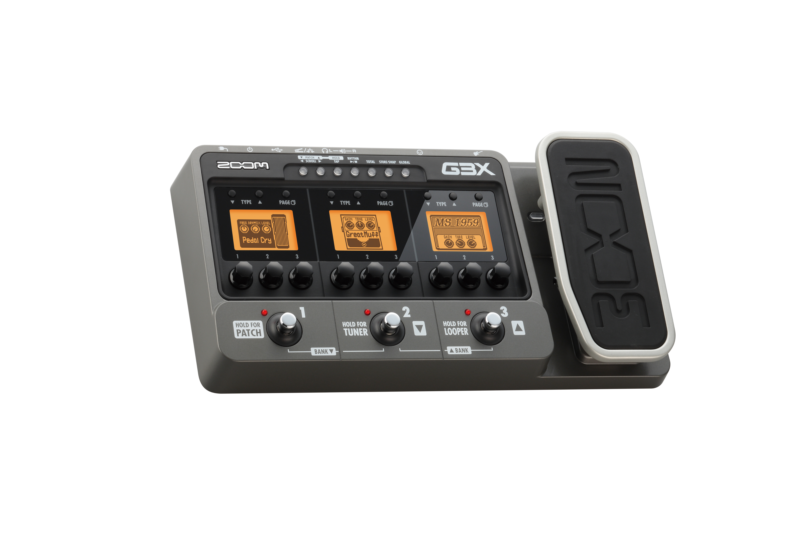

Zoom G3 Guitar Multi-effects Processor version 2.0
With the power of an advanced multi-effects unit, the convenience of a pedalboard, and the versatility of a USB audio interface, the Zoom G3 guitar effects and amp simulator pedal is your go-to all-purpose guitar super tool. Three large LCD displays and footswitches give you a genuine stomp-box experience, and individual controls for effects and amp molding make the G3 an invaluable live tool. Create and store up to 100 original tones using 100 built-in DSP effects. Other features, such as an onboard drum machine and a built in 40-second looper are especially handy for private practice. In the studio, you'll love the G3's USB and XLR outputs. And because the it comes with both Zoom's Edit & Share preset software and Steinberg's Sequal LE recording software, you'll get even more out of your G3 when you hook it up to your computer!
Zoom G3 Specifications:
o 3 large LCD displays and footswitches
o Amp or stomp box effects can be used in any combination
o Authentic amp modeling simulates amps, cabinets and mics separately
o Over 100 built-in DSP effects
o Create and store up to 100 original tones
o Integrated drum machine
o Looper function with 40 seconds of phrase recording and overdubbing
o USB audio interface for DAW recording (Mac and PC)
o Includes Edit & Share and Steinberg Sequal LE recording software
o Over 6 hours of operation using 4 AA batteries, as well as USB bus and AC power
o Includes AC Adapter.